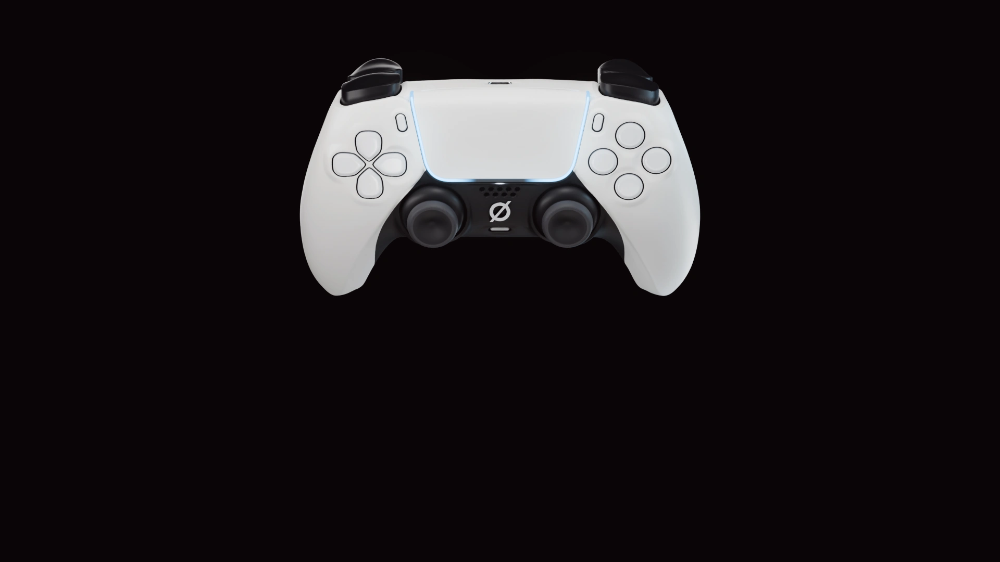

Nasıl çalışıyor?
Kabloyla aldığınız efektleri Bluetooth’la da kullanın.
Bu özellikleri destekleyen PC oyunlarında haptik geri bildirimi ve adaptif tetik efektlerini Bluetooth üzerinden kullanın. DS5 Untethered ücretsiz ve açık kaynak. Oyun kumandayı kablolu görüyor, siz kablosuz oynuyorsunuz.
Sorun
DualSense’i PC’ye Bluetooth ile bağladığınızda her oyunda aynı özellikleri kullanamıyorsunuz. Bazı oyunlarda adaptif tetikler ve normal titreşim çalışsa da yağmur damlaları, zemin dokusu gibi ince detayları hissettiren haptik geri bildirim için USB kablosu gerekiyor.
- Oyun
- Sanal kablolu DualSense
- Bluetooth
- Kumandanız
DS5 Untethered, Bluetooth ile bağlı kumandanızı algılar.
Bilgisayarda kabloyla bağlıymış gibi görünen sanal bir DualSense oluşturur. Oyun da bu sanal kumandayı görür.
Oyunun gönderdiği haptik geri bildirimi, tetik efektlerini ve ışık komutlarını Bluetooth üzerinden elinizdeki kumandaya aktarır.
Uygulama, ücretsiz usbip-win2 ve HidHide sürücülerini kullanır. Kurulum ekranı gerekli sürücüleri kontrol eder; indirme, eşleştirme ve bağlantı testi adımlarında size yol gösterir.
Fare modu
Kumandayı bırakmadan ayarlarınızı değiştirin.
Oyunun ortasında profil değiştirmek ya da tetik gücünü ayarlamak için klavye ve fareye uzanmanız gerekmiyor. Uygulamayı kumandadan açın, dokunmatik yüzeyle ayarlarınızı değiştirin ve oyununuza dönün.
Uygulama önizlemesi · Genel Bakış
Kumanda elinizde, oyun açık
Ayar değiştirmek istiyorsunuz ama klavye ve fare uzakta.
ø tuşuna kısaca basın
Uygulama öne gelir ve fare modu açılır.
İmleci dokunmatik yüzeyle hareket ettirin
Parmağınızı kumandanın dokunmatik yüzeyinde gezdirerek imleci kontrol edin.
Tıklamak için yüzeye basın
Dokunmatik yüzeye bastığınızda fareyle tıklamış olursunuz. Profil menüsünü de böyle açabilirsiniz.
Profilinizi seçin
Örneğin “Rahat” profiline geçin. Yeni ayarlar oyun açıkken hemen uygulanır. Sağ tıklamak için yüzeyin sağ tarafına basmayı veya iki parmakla basmayı da seçebilirsiniz.
“Oyuna Dön”e basın
Oyun yeniden öne gelir, fare modu kapanır ve kumandayla oynamaya devam edersiniz.
Alternatif kısayol
ø tuşunu basılı tutup Seçenekler tuşuna basarak da fare modunu açıp kapatabilirsiniz.
Özellikler
Oyunun kendi haptik efektlerini kablosuz hissedin.
Bu özelliği destekleyen oyunların ince detayları hissettiren haptik efektleri Bluetooth üzerinden kumandanıza aktarılır. Böylece kablosuz oynarken normal titreşimin yanında bu efektleri de hissedersiniz.
Tetiklerdeki direnci kablosuz oynarken de hissedin.
Oyunun gaz, fren veya silah kullanırken gönderdiği adaptif tetik efektleri Bluetooth üzerinden kumandanıza ulaşır. Bu efektleri koruyarak tetik gücünü kendinize göre ayarlayabilirsiniz.
Xbox oyunlarının tetik titreşimini DualSense’te hissedin.
Bazı oyunlar gaz, fren, ABS veya patinaj hissini Xbox kumandasının tetiklerini titreterek verir. DS5 Untethered, bu efektleri DualSense’in adaptif tetik motorlarıyla yeniden oluşturur.
Özelliği Ayarlar → Kumandalar → Tetikler bölümünden veya uygulamanın Oyunlar sayfasından açabilirsiniz. Varsayılan olarak kapalı.
Ayrıntılar
Bu özellik açıkken ilgili oyun, kumandayı Xbox Series olarak görür. Oyundan gelen tetik titreşimleri DualSense’e aktarılır. Profilinizde “Xbox Gibi”, “Yumuşak” veya “Keskin” seçeneklerinden istediğiniz hissi seçebilirsiniz.
Uygulama, tetik titreşimini desteklediği bilinen oyunları tanır. Oyun listesi de güncellenir.
Oyunun renkleri kumandanıza yansısın.
Oyunun gönderdiği ışık efektleri Bluetooth üzerinden kumandanıza aktarılır. Dilerseniz ışık ayarlarından kendi renginizi ve efektinizi de seçebilirsiniz.
Bir renk seçerek ışık çubuğunda nasıl göründüğüne bakın.
Kumandanızın mikrofonunu ve hoparlörünü kablosuz kullanın.
DualSense’in mikrofonunu Discord gibi uygulamalarda kullanın. Mikrofonu kumandadaki mikrofon tuşuyla kontrol edin. Bu özelliği destekleyen oyunların doğrudan kumanda hoparlörüne gönderdiği sesleri de Bluetooth üzerinden duyabilirsiniz.
Bilgisayarın tüm sesini de kumandadan dinlemek isterseniz Hızlı Ayarlar’da ses çıkışı olarak Kumanda Hoparlörü’nü seçin.
DualSense desteği olmayan oyunlara da titreşim ekleyin.
“Sesi Titreşime Çevir” özelliği oyun sesinden titreşim üretir. Yalnızca bas sesleri veya tüm sesi kullanabilir, titreşimin gücünü ayarlayabilirsiniz.
Xbox ve DualShock 4 için gönderilen klasik titreşimler de DualSense’in haptik motorlarıyla yeniden üretilir. Titreşim gücünü ve hissini kendinize göre değiştirebilirsiniz.
Profiller
Her oyunun ayarlarını kendinize göre yapın.
Titreşim, haptik geri bildirim, tetik ve ışık ayarlarınızı profillere kaydedin. Aynı oyun için birden fazla profil oluşturabilirsiniz. Örneğin yarışırken güçlü efektler sunan bir profil, daha sakin oynamak istediğinizde hafif titreşimler veren başka bir profil kullanabilirsiniz.
Oyunlar sayfasından bir oyunun ayarlarını açarak profil oluşturabilir, adını değiştirebilir veya kopyasını çıkarabilirsiniz. Profiller arasında Genel Bakış ekranından ya da oyunun ayarlarından geçiş yapın. Değişiklikler oyun açıkken hemen uygulanır.
Bunlar örnek profiller. Adlarını ve ayarlarını siz belirlersiniz.
- Yarış
- Haptik
- Güçlü
- Tetikler
- Güçlü
- Işık
- Kırmızı
- Rahat
- Haptik
- Hafif
- Tetikler
- Hafif
- Işık
- Kehribar
- Güçlü Titreşim
- Haptik
- Güçlü
- Tetikler
- Normal
- Işık
- Beyaz
Başka neler var?
Bağlantıyı da oyun ayarlarını da aynı uygulamadan kontrol edin.

- Oyunların kendi haptik geri bildirimleri ve adaptif tetik efektleri
- Haptik ve tetik gücü ayarı
- Xbox tetik titreşimi
- Oyun sesinden titreşim üretme
- Işık çubuğu ve ışık efektleri
- Kumandanın mikrofonu ve destekleyen oyunlarda hoparlörü
- Tuş atama ve gyro ile nişan alma
- Dokunmatik yüzey veya analog çubukla fare kontrolü
- Her oyun için ayrı ayarlar ve birden fazla profil
- Steam ve Epic Games oyunlarını bulma
- Her oyun için DualSense, DualShock 4, Xbox Series veya Xbox 360 seçimi
- Oyuna uygun kumanda türünü otomatik seçme
- HidHide ile gerçek kumandayı oyunlardan gizleme
- Bluetooth adaptör testi ve anlık bağlantı bilgileri
- Yeniden bağlanma, düşük pil uyarısı ve kullanılmadığında kapanma
- DualSense Edge desteği
- En fazla dört kumandayı kaydetme ve kumandalara ad verme
- Uygulama içinden güncelleme

İndirin, kablosuz oynamaya başlayın.
Windows için indirKaynak kodunu incele Sorular ve öneriler
Windows 10 ve 11'de çalışır. Bilgisayarınızdan indirin.
DS5 Untethered ücretsiz ve ücretsiz kalacak. İşinize yaradıysa GitHub’da yıldız verebilir, geliştirilmesine katkıda bulunmak isterseniz GitHub Sponsors üzerinden destek olabilirsiniz.
Hızlı kurulum
- GitHub’daki son sürümden
DS5-Untethered-<sürüm>-Setup.exedosyasını indirip çalıştırın. - usbip-win2 ve HidHide sürücülerini kurun. Bu sürücülerin kurulumu için yönetici izni gerekir.
- DualSense’i Windows’un Bluetooth ayarlarından eşleştirin.
- DS5 Untethered’ı açıp Kurulum ekranındaki adımları tamamlayın. Uygulama sürücüleri ve Bluetooth bağlantısını kontrol eder.
- Destekleyen bir oyunu başlatın. Oyunun haptik geri bildirimlerini ve tetik efektlerini kablosuz kullanmaya başlayın.
Takıldığınız bir yer mi var? GitHub’daki Sorular ve Öneriler bölümüne yazın.
Gereksinimler
- Windows 10 veya Windows 11
- DualSense ya da DualSense Edge
- Bilgisayarın dahili Bluetooth’u veya bir USB Bluetooth adaptörü
- Ücretsiz usbip-win2 ve HidHide sürücüleri
Kurulum dosyası mı, ZIP mi?
Çoğu kullanıcı için kurulum dosyası yeterli. Uygulama yalnızca kendi Windows hesabınıza kurulur. Uygulamanın kendisini kurmak için yönetici izni gerekmez.
ZIP sürümünü tercih ederseniz dosyaları bir klasöre çıkarıp Kopru.App.exe dosyasını çalıştırabilirsiniz.
İki sürümde de gerekli .NET bileşenleri var. Ayrıca .NET kurmanız gerekmiyor. Her iki sürüm için de usbip-win2 ve HidHide sürücülerini kurmanız gerekiyor. Bu sürücüleri kurmak için yönetici izni gerekli.
Uygulama henüz dijital olarak imzalanmadığı için Windows SmartScreen uyarısı görebilirsiniz. İndirdiğiniz dosyanın projenin resmi GitHub sürümlerinden geldiğini kontrol edin.
Oyunu kapatmadan ayar değiştirme
ø tuşuna kısaca basarak uygulamayı öne getirin. Fare modu otomatik açılır; dokunmatik yüzeyle imleci hareket ettirip yüzeye basarak tıklayabilirsiniz.
Ayarlarınızı değiştirdikten sonra “Oyuna Dön”e basın. Fare modu kapanır ve kumandayla oynamaya devam edersiniz.


Sık sorulan sorular
DualSense’in haptik geri bildirimi ve adaptif tetikleri PC’de Bluetooth ile çalışıyor mu?
Oyuna göre değişiyor. Bazı oyunlar Bluetooth üzerinden adaptif tetik efektleri ve normal titreşim gönderiyor. İnce detaylı, ses tabanlı haptik geri bildirim içinse kablolu bağlantı gerekiyor.
DS5 Untethered, oyunun kabloyla bağlıymış gibi gördüğü sanal bir DualSense oluşturuyor. Bu efektleri de Bluetooth üzerinden kumandanıza aktarıyor.
Bazı oyunlarımda tetikler ve titreşim zaten kablosuz çalışıyor. Uygulama ne ekliyor?
Hissettiğiniz normal titreşim ve adaptif tetik efektleri oyunun kendi Bluetooth desteğinden geliyor olabilir. Eksik kalan kısım, yağmur damlaları ve zemin dokusu gibi ince detayları hissettiren ses tabanlı haptik geri bildirim.
DS5 Untethered, oyunun kablolu bağlantıda gönderdiği bu haptik efektleri Bluetooth üzerinden de iletiyor. Aynı sahneyi kablolu ve kablosuz oynayıp aradaki farkı karşılaştırabilirsiniz.
Özel adaptör veya ek cihaz gerekiyor mu?
Hayır. Bilgisayarınızın dahili Bluetooth’unu veya standart bir USB Bluetooth adaptörünü kullanabilirsiniz. Kurulum ekranından Bluetooth adaptörünüzü de test edebilirsiniz.
Gecikme ne kadar?
Gecikme, kullandığınız Bluetooth adaptörüne ve bağlantı koşullarına göre değişir. Genel Bakış ekranından anlık bağlantı gecikmesini ve veri aktarım hızını takip edebilirsiniz.
Hangi oyunlarla çalışıyor?
DualSense’in haptik geri bildirimini veya adaptif tetiklerini USB üzerinden destekleyen oyunlarla kullanabilirsiniz. Uygulamanın tanıdığı oyunlar Oyunlar sayfasında listelenir.
DualSense desteği olmayan oyunlarda ise klasik titreşim ayarlarını, özel tetik profillerini ve oyun sesinden titreşim üretme özelliğini kullanabilirsiniz. Xbox tetik titreşimini destekleyen oyunlar için de ayrı bir seçenek var.
Oyunu kapatmadan ayar değiştirebilir miyim?
Evet. ø tuşuna kısaca basınca uygulama öne gelir ve fare modu açılır. Ayarlarınızı kumandanın dokunmatik yüzeyiyle değiştirip “Oyuna Dön”e basarak devam edebilirsiniz.
Ücretli mi?
Hayır. DS5 Untethered ücretsiz ve açık kaynak; ücretsiz kalmaya da devam edecek. Ücretli sürümü veya ödeme gerektiren bir özelliği yok. GitHub Sponsors üzerinden destek olmak tamamen isteğe bağlı.